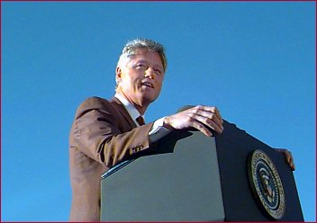
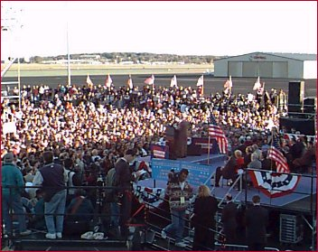

Little Rock, AR
President Clinton
November 2, 1996


Adams Field
THE PRESIDENT: Thank you. Thank you. Ladies and gentlemen, first of all, let me say it's good to be home and thank you for coming out to say hello. (Applause.)
I want to thank the Parkview High School band — the Central High School band — the Little Rock Community Choir. I want to thank all of those who are up here on the platform with me. I don't have everybody's name up here. I don't know if I can remember without eyes in the back of my head. I never needed eyes in the back of my head until I moved to Washington. (Laughter.)
I'm glad to be here today. I have just come from a great rally in front of the Alamo in San Antonio. And we were in El Paso, New Mexico, Arizona, Nevada, California on the day before that. I'm on my back across the country — from here to New Orleans and then on to Florida.
But I wanted to stop here just to be with you once before this election to say a special word of thanks to my good friend David Pryor for his lifetime of service to our state — to Congressman Ray Thornton for his lifetime of service and to wish him well on his new service on the Supreme Court. Thank you, Ray.
I thank my good friend, Dale Bumpers. Folks, I don't know what I'd have done in the last four years if it hadn't been for Dale and David up there keeping me sane in the tough times, standing up for you and for what was right, never being intimidated by some of the most overbearing and destructive tactics I have ever seen coming from the other side.
I want to thank Sharon Priest and Lottie Shackleford and Julia Pecmavley (phonetic) and Bess Wingfield, Charlie Daniels, Mayor Dailey, Mayor Hayes, Judge Valines (phonetic). Thank you, Charlie Cochapin (phonetic), for running for Lieutenant Governor and good luck to you. You were terrific. (Applause.)
Bynum Gibson, my long-time friend, Junior Lee Fisher, who was the coordinator of my campaign in the first congressional district in 1978. We've been together a long time. Thank you, Jimmy Lee.
I read an article in the paper today, our morning paper here, saying that if the past was any precedent, it might be a mixed blessing for Winston Bryant and Vic Snyder and Marion Berry and Ann Henry for me to be coming down here today, because Arkansas people didn't really like for the President to tell them how to vote. Well, I couldn't tell you how to vote when I was governor, I don't know how I'm going to start now. (Laughter.) It never occurred to me to tell you how to vote. I will say this, since he asked me for it, I'm going to give Vic Snyder my vote on Tuesday, I'll be here and I'll be proud to vote for him. (Applause.)
And I'll be proud to vote for Winston Bryant and I wish I could vote for Marion and Anne. Let me say to all of you, you ought to vote for yourselves, your children and your future on Tuesday, but you need to understand that while all four of these people are friends of mine and I have worked with them and I know them very well, what you really should be voting on is what you want our country and this state to look like when we start that new century just four years from now.
We're about to have a presidential election for the last President of the 20th century and the first President of the 21st century. And the stakes could hardly be greater. We're actually very fortunate because not only are the consequences large, but the choice is so clear.
I really don't like a lot of what's happened in politics in the last several years. I don't like the fact that, especially when you get down toward the end and people get desperate, they think the only thing to do is to try to convince you that their opponent is no good. The truth is since you all started me out 22 years ago, it has been my experience that most people who do the public's work are honest people, they work hard and they do what they think is right virtually all the time — in both parties. That's been my experience. And what I want to talk about to you today is that there are honest differences here.
You know, I worked with Representative Hutchinson when he was in the state legislature; I liked him. We had a cordial relationship. Hillary and I send our prayers out to Tim and his wife for the welfare of their son. I know all of us feel that way, without regard to party. We ought to get away from this idea that we have to demonize our opponents in order to clarify our differences. (Applause.)
This is — and I appreciate what Winston said about that, you know. But don't worry about me, every time I get down I remember — when they start picking at me I remember what Mark Twain said about a dog. Mark Twain said, every dog ought to have a few fleas — keeps him from worrying so much about being a dog. (Laughter.) Some days I feel I have more fleas than I wish I did, but don't worry about that.
Here's what the issue is and you saw it in that budget fight we had when they shut the government down and I vetoed the budget. This is about two different ways of looking at how we are as a people and how we're getting to the future. They believe that we're better off being on our own. And if we do good things together that's fine. But it ought to basically be a question of letting everybody just go out there and do the best they can.
I believe that we do better when we help each other to have the tools to make the most of our own lives. Every politician I ever knew would tried to give a speech every now and then trying to convince you that he or she was born in a log cabin that they build themselves. (Laughter.) But the truth is there's no a one of usstanding here today who'd be here if it weren't for the help of some other people.
And I believe America is better when we work together to give everyone the tools to live up to the fullest of their God-given ability to keep our country a strong force for peace and freedom and prosperity and to give us a chance to live together in one community. That's what I believe. And that's the difference.
That's why the real issue is should we say we're on our own or should we build a bridge to the future we can all walk across together? That is the issue. That's the issue in all these Congress races. That's the issue in this Senate race. That is the issue. (Applause.)
I think they believed what they were doing when they passed that budget. I think they thought it was a good thing to give people like me a tax cut even though I didn't need it and cut Medicare and Medicaid. Let me just tell you, those words may not mean much to people. What they tried to do was to end the standards for nursing home care that David Pryor spent his entire life working for. They thought that was an inappropriate thing for us to be doing together, saying that there's some things that every senior citizen in every nursing home and every place in America ought to know that they can get if the government is paying through the taxpayer's money to put them in a nursing home. I think David Pryor was right and they were wrong. (Applause.)
They wanted to take away the guarantee that we had given for 30 years to middle class families who have family members with disabilities so they can care for them, they can live at home, they can work and they can have a decent life. They wanted to forget about that guarantee. They wanted to take away the guarantee of health care we've given for poor women and their little infant babies. And I think it was wrong. They did, they wanted to cut the student loan program, cut Head Start, paralyze our ability to protect the environment, clean air and clean water. That's what they wanted to do and I think they were wrong.
But you have to decide whether they're right or not. I read all this stuff in the press about how Arkansas is, you know, more Republican or more Democrat, both parties are worried and all that kind of stuff. Let me tell you, when I went up there five years ago and one month from tomorrow, when I announced for President here in LIttle Rock -- I got a quote here of what I said. I said I wanted to go to Washington to do a better job of the old-fashioned work of confronting the real problems of real people and pointing the way to a better future: more opportunity, more responsibility, a stronger community.
Well, four years ago, the rest of the country took me on faith. You were the only people that knew exactly what you were doing. (Laughter.) The rest of them took a chance. (Applause.) The rest of them took a chance. But when you think about which approach works when you think about Ann Henry, who's been our friend forever — she and her husband Morris hosted Hillary and I — our wedding reception in their home and I've been wondering how many votes it was going to cost him in the election. (Laughter.) But they did a great thing for us and we'll never forget it. When I think about Marion Berry — I don't how many times Dale and David and I have been in Marion Berry's home for the coon supper at Gillette, but he's been with us all the time. He did a superb job at the Agriculture Department. When I think about Dick Snyder and all the votes that he cast in the Arkansas State Senate to give our children a better future and our state a stronger economy and make our environment stronger; when I thinkabout Winston Bryant and the work that he did as Secretary of State, as Lieutenant Governor, as Attorney General — all the work we did together, all those years that we worked together, and I realize that they believe in the approach. And now you know whether it worked or not.
It's inconvenient for our friends in the Republican Party. But we do have 10.7 million more jobs than we had four years ago. (Applause.) It is inconvenient for them that this is a faster rate of job growth than under any Republican administration in 70 years. (Applause.) It's inconvenient. We have the lowest deficit of any great country in the world — the lowest it's been in America in 15 years. Our average unemployment rate is the lowest its been in 20 years, our average inflation rate is the lowest it's been in 30 years. We've had the biggest decline in income inequality among working people in 27 years, the lowest rates of unemployment and inflation together, the so-called "misery index" in 27 years. This approach is working. That's why you ought to send him to Congress, it is the right thing for America. We need to keep going on this track. (Applause.)
We've had four years of declining crime rates. The crime rate in America is at a 10-year low. There are 2 million fewer people, nearly, off welfare than there were four years ago. Child support collections in America are up 50 percent, $4 billion a year. This approach is working.
Now, it's interesting to me that right before this Congress had to go home and face the voters, they all of a sudden decided they liked my agenda. So now they're home running on the fact that even though they opposed it, finally we did raise the minimum wage for 10 million people; we passed a health care reform bill that says you can't have your health care taken away from you just because you changed jobs or somebody in your family has been sick; said the insurance companies can't kick mothers and their newborn babies out of the hospital after a day. (Applause.)
Those were good things. It is a good thing. But that's what we should have been doing all along. And I'm telling you, this is not — and let me just say this. One thing it isn't, this race, it is not about conservative or liberal. The crime bill we passed had 100,000 police. It had the death penalty for drug kingpins and people that killed police officers. It had three strikes and you're out. It also had, as you know, the Brady Bill and the assault weapons ban. And they made a lot of hay out of that in Arkansas.
Do you remember two years ago? Now, you know they were going into Arkansas saying, oh, that Clinton's gone crazy; he went to Washington, now he's going to take your gun away. Well, it's been two years and now we know there's not a single hunter in Arkansas that's lost a weapon; but 60,000 felons, fugitives and stalkers didn't get handguns because of the Brady Bill and the assault weapons ban don't need to be on the street in Little Rock. They don't need to be here. (Applause.)
Now we know. So vote for yourselves, but this approach will work. There are still a lot of things we have to do. Your vote — don't be deluded here. There are huge consequences to your vote. What would America look like — Dale Bumpers is right — what would America look like if their budget had prevailed? If their budget had prevailed it would have been a clear message, you're on your own; we're going to be more divided. Those of us that are well-positioned, we're going to do better; and those who aren't, well, they'll do worse and it's just tough.
Now, that's what would have happened. And when they shut the government down, they thought that Dale and David and Ray and I, they thought we'd wilt. They thought that the Democrats would just be miserable not having the government open every day. They were even willing to bring us to the point of default, the people in that Congress were, to wreck all the economic progress we'd made because they thought we'd wilt. And you know what I told them? I'd a lot rather see the America people hurt for 20 or 30 days than for 20 or 30 years. You have at it, I'm not going to buy that budget. You can forget about it. (Applause.)
Now, you have to decide. But how you vote in these races will determine whether we do what I want to do, which is to balance the budget and still protect Medicare and Medicaid and education and the environment, or adopt their scheme of an even bigger tax cut which would still raise taxes on 9 million of the hardest-pressed working people in America, and blow a hole in the deficit and require bigger cuts than the ones I vetoed. You have to decide.
You have to decide whether we are going to continue to put 100,000 police on the street. This is an amazing thing — you ask the mayors that are here, this is amazing. First they tried not to put 100,000 police on the street. Then they tried to do away with it in their budget. Then they tried to cut it back a third time. And I stopped them every time. I'd like to have somebody up there in Washington who believes in law enforcement and would like to make our streets safer. If we have four more years of declining crime, we might have every neighborhood, every street, every school and every child in this country safe again. And that's what I want. And that's what they want. And I hope you'll give us a chance to do it. (Applause.)
There's a lot more to do in health care. Our balanced budget plan has some things in health care reform that they'll never be able to do. But I turned it in in a balanced budget plan — let families keep their health insurance for six months when they're between jobs, put another million children into the ranks of health-insured, free mammograms for women on Medicare — and a little help for respite care for the 1.7 million families who are courageously helping to care for family members with Alzheimer's disease. There are important things. They won't do it and we will. If you want that done, you better for them. That's what at stake here.
But let me say this, of all the issues and you know them well, the biggest issue before us involves these children here. And that's the question of education. (Applause.) What is their plan for education? Abolish the Department of Education. Do you really want that?
AUDIENCE: No!!
THE PRESIDENT: Do you believe America can afford to be the only great country in the world to start the 21st century with no one even sitting at the President's Cabinet to speak for the children of America?
AUDIENCE: No!!
THE PRESIDENT: That's their position. My position is hook every classroom in every rural school in Arkansas and every inner city school up to that Information Superhighway and give those kids access to world class education — open the doors of college education to all Americans.
You want to talk about a tax cut — the most important tax cut we could give is to let people deduct the cost of a typical community college tuition from their tax bill. That would open two more years of education to every American. (Applause.) Let people deduct $10,000 a year for college tuition at any college in America then every young person and every grownup who needs to go back to college could afford to go.
That is the choice. And you just have to decide. And I'm telling you, when you go in there on Tuesday, when you talk to your friends and neighbors and you go back home, there are people here from all over this state, from all of our congressional districts. You tell them that it's exactly what is on the line here. Are we going to do this together, or are we going to be driven apart?
You know, so much — when I left here I couldn't have known exactly what challenges would confront me as President, in terms of foreign policy, especially. I'm grateful that the United States has been a force for peace. I'm grateful that we've been able to open new markets for American products and we're selling more American products than ever before; we're number on in auto production now for the first time since the 1970s. I'm glad we've been able to do these things.
But it's amazing how much time I have to spend with people around the world doing things that we try to teach our children not to do. People all over the world — you look at the Middle East or Bosnia or Haiti or Northern Ireland or all those tribal wars in Africa and all this. What is this about? People hating each other because they're of different religions, different races, different ethnic groups and different tribes. Everything you try to teach your kids not to do — you know, treat everybody with respect and define yourself in terms of what you believe, not who you can look down on. There are people all over the world now who are literally consumed with hatred for other people because they're in different groups.
And if we get divided, that will happen more. That's why I spoke out so strongly against hating people who worked for the federal government after the tragedy in Oklahoma City. That's why when all these church burnings occurred we got on it and we tried to stop it and we tried to get after it. And that's why I want you to think about that, too. How long were we held back in this state because black people and white people couldn't get along? How long?
AUDIENCE: Too long!
THE PRESIDENT: How long will we be held back in the 21st century if we say we're not going to work together, I want mine, you get yours; there's the future, I hope you make it. Hillary was right, it does take a village to raise our kids and to build our future. (Applause.)
The world is changing in ways you can't imagine. Arkansas will change in ways you can't imagine. No one can fully perceive the implications. When I became President, 3 million people were making a living in their homes. Today, because of computers, 12 million people are making a living in their homes. Four years from now, 30 million people will be making a living in their homes.
In the last four years we've found two genes that cause breast cancer, and if we're lucky we may be able to find enough genetic information not only to cure breast cancer but to prevent it. We're using a lot of these satellite, sophisticated imaging technologies now to beam then into bodies to see if we can find out what's wrong with people before any of their problems get out of hand.
We just found out that we could make a laboratory animal with its spine severed have movement in its lower limbs by transferring the nerves from the legs to the spine. None of this has ever been done before.
We're building a supercomputer, the government is, with IBM that will do more calculations in one second than you can do on a hand-held calculator in 30,000 years. I'm telling you, the world is changing. And for us to go back to the old politics that the other side is preaching, trying to convince people that their opponents don't share American values, that they're aliens from outer space, that everything the government ever did was wrong is nuts.
We have to stand up for a bright future. The best days of this country are still ahead. (Applause.) But we'll only achieve them — we will only achieve those days if we define carefully what we should do together. But I'll say again, it's not about liberal and conservative. I want you to tell your friends and neighbors this when you go home: We have reduced the size of the government to its smallest size since Kennedy was President, more than the last two Republican administrations did. We eliminated more government regulations and more government programs than the two Republican administrations did. We privatized more government operations than the two Republican administrations did.
This is not about liberal or conservative. We have run by far the most fiscally conservative government, and we've done more to stand against crime, and we've stuck up for this country in having a strong foreign policy. I think the record will stand on its own. This is not what that's about.
This is about whether you're going to be diverted and divided, or whether we're going to find common ground and build that bridge to the 21st century together. You've got enough sense to figure out to talk to your friends and neighbors about that between now and Tuesday. Don't let the people of Arkansas be diverted from the real issue. This country is better off and this state's better off than it was four years ago. It's going to be better off four years from now if we stay on the right track to build that bridge to the 21st century. (Applause.)
Thank you and God bless you all. (Applause.)
Paid for by Clinton/Gore ’96 General Committee, Inc.